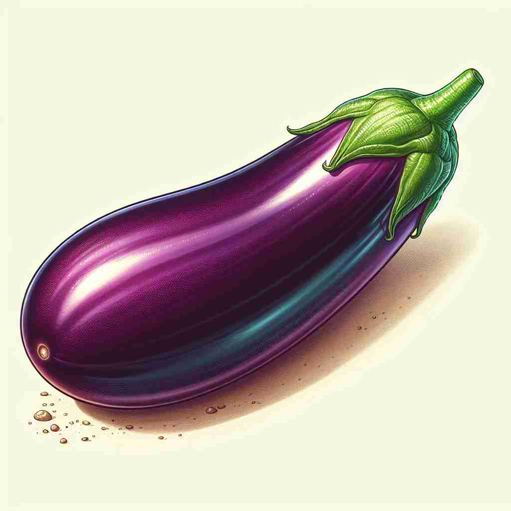

💬 I love cooking with eggplant in my favorite dishes. 我喜欢在我最爱的菜肴中使用茄子烹饪。

💬 She loves cooking an eggplant with garlic. 她喜欢用大蒜烹饪茄子。
💬 I love cooking with eggplant in my favorite dishes. 我喜欢在我最爱的菜肴中使用茄子烹饪。
💬 She loves cooking an eggplant with garlic. 她喜欢用大蒜烹饪茄子。
🧠 想象一个深紫色、椭圆形的蔬菜。这个形象既可以让你联想到实际的茄子，也可以联想到它的颜色和形状特征。记住这个核心图像，可以帮助你更容易理解和记忆'eggplant'的各种含义，无论是指蔬菜本身、颜色，还是在现代通讯中的象征用法。
🔈 ['egplɑːnt]
🗝️ n. a large oval vegetable with a smooth, dark purple skin 一种表面光滑，深紫色的巨大椭圆形蔬菜。
🎭 想象一个厨房场景，一位厨师正在准备一道异国风味的菜肴。他从冰箱里拿出一个光滑而深紫色的茄子，小心翼翼地将其切片。茄子特有的深紫色和光滑表皮让人印象深刻，这就是 eggplant 作为一种蔬菜的典型形象。
💬 She bought an eggplant to make ratatouille. 她买了一个茄子来做杂烩菜。
🌳 由 "egg"（蛋）和 "plant"（植物）组成。这个词反映出茄子在早期阶段形状及颜色有些类似于鸡蛋。
💡 可以联想到茄子的形状像一个"蛋"并且是一种"植物"，使得记忆更加具体和生动。
🗝️ n. a dark purple color 深紫色
🎭 在时尚服装店中，一位顾客正在挑选衣服。她指着一件连衣裙，惊叹于它那迷人的紫色，店员解释说："这就是 eggplant 色，适合各种场合。"这种场合揭示了 eggplant 作为一种颜色的独特魅力。
💬 The walls were painted in a rich eggplant color. 墙壁刷成了深茄子色。
🤔 源于茄子特有的深紫色皮
🗝️ n. used as an emoji to represent a penis 用作表情符号来代表阴茎
🎭 在一场活跃的群聊中，好友们在谈论周末的派对计划。一个人用 emojis 发表了一条幽默的评论，其中就用到了茄子表情。在这个轻松幽默的对话中，eggplant emoji 的用法作为一种颇具大胆意味的象征被呈现出来。
💬 He sent an eggplant emoji in response to her flirty message. 他回复她调情的信息时发了一个茄子表情。
🤔 因其形状与人类男性生殖器官相似